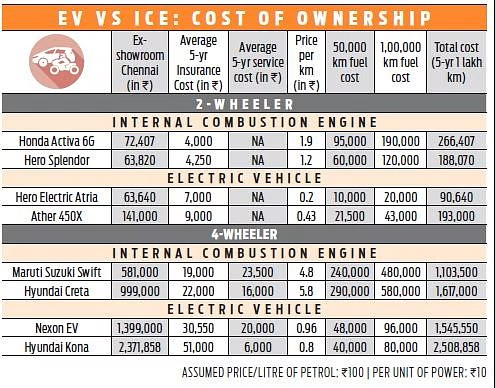
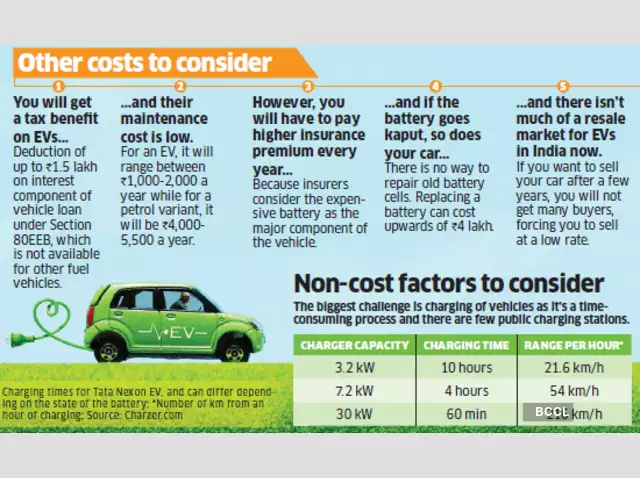
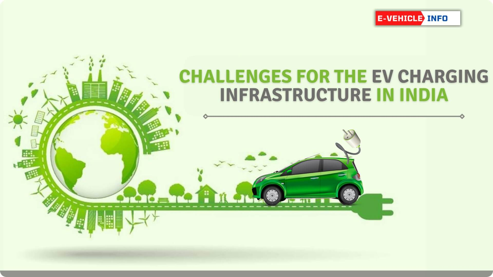
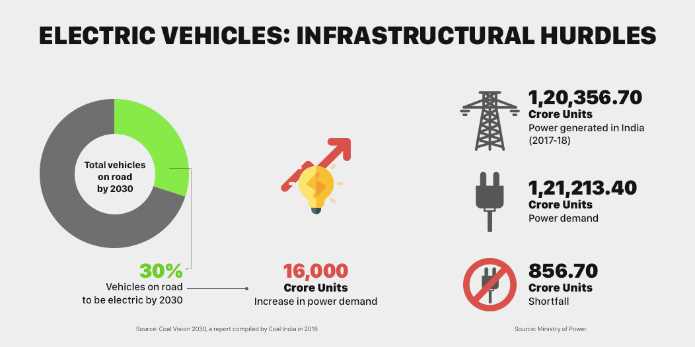
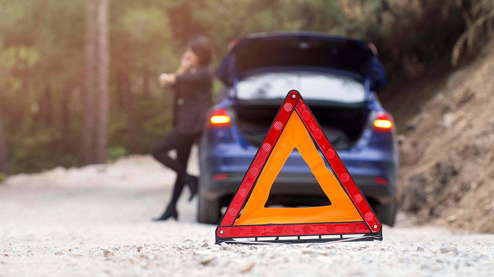
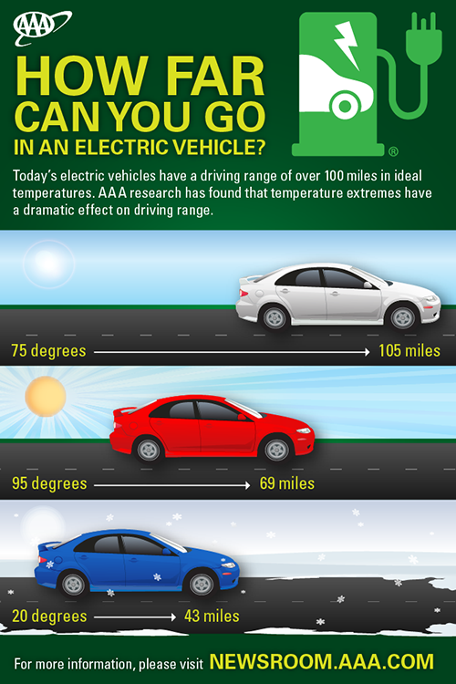
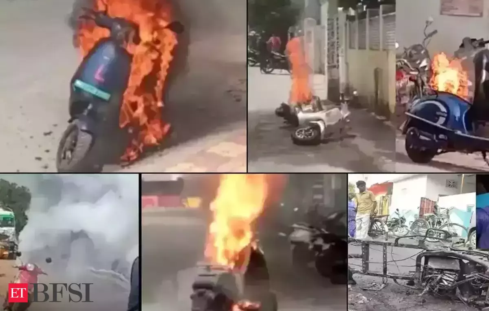
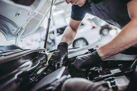

MAJOR PROBLEMS BY ELECTRIC VEHICLES
COST OF VEHICLES
Electric vehicles much more costlier than the non-renewable motor vehicles.
The average EV can Cost around 9.6 lakhs - 2.5 crore in India,
Tata Tiago EV is the Cheapest EV car in India which cost around 5.67 lakhs to 9.04 lakhs.
While Diesel Can cost less Compared to EV. The average diesel can cast around 6 lakhs.
The insurance cost is also much higher and
Setting up a home Charging Station involves additional Costs Owner has to invest in installation equipment.


Click on the image to know more.
CHARGING POWER STATION
There are very limited power station across the Country. It is not an easy tasks for an EV user to find a power station.
There are some power station which are not functioning in malls or public places
The energy that is required to run a Power Station comes from coal power plant.
Establishing a power station costs for both public and private entities, the financial barriers may slow down the expansion
of charging network as the return on the investment may not come immediately.
There should be no power outrage because it can disrupt the charging. The Different Charging grid may effect the grid. The rate of Charging in many Ev very low it may take upto 8 hours from empty-to-full with a 7 kw Charging point.
The different Changing Cable grids may cause difficult to find a Suitable station, removing and overusing of charging grid may effect the grid.
Battery degradation is another Challenge associated with Charging EV's over time repeated Changing and discharging cycle can gradually lead the loss of battery capacity.


Click on the image to know more.
RANGE
The limited driving range of ev refers to the distance they can travel on a single battery Charge.
Ev drivers may need to plan routes strategatically, Considering the location of charging station for longer journeys.
External factors such as Climate and driving habits, effects the range.
Cold weather Can decrease battery efficiency, while speed driving on frequent stops can impact overall range i.e. mileage.
If the temperature is high during the running of the vehicle it effect long-term performance of the battery. The battery needs to be get better at storing more energy.
People worry about the running out of battery.
The average range of ev cars are 348 KM (219 miles).


Click on the image to know more.
HEATING PROBLEMS
The heart of an ev is its battery pack, lithium-ion Cells.
These batteries offer high energy density and efficiency, they react different on temperature.
Variations Heating temperatures can make Chemical reactions with in the battery cells, leading to degradation of the electrodes and electrolyte, ultimately reducing the battery's capacity and overall life span.
Extreme temperatures, whether too hot or too cold, can strain thermal management systems.
In could conditions, the battery's performance can be hindered, trading to reduced range and efficiency.
Conversely, high temperatur can overwhelm the cooting mechanismes, potentially Causing thermal runaway- a rapid and uncontrollable increase in temperature.
Fast Charging is also heating challenge, Continuously transforing a large amount of energy to the battery generates more heat, requiring effective cooling strategies.
Additionally, repeated fast Charging sessions can contribute to long- term battery degradation.

Click on the image to see video.
MAINTANANCE
Some of the problems in maintenance
1) Brake System: Ev often use regenerative braking, which reduces wear on traditional brake Systems. However, it is essential to monitor and maintain the brake system, as some friction braking Components may still require attention.
2) Electric Motor Maintenance: Routine Checks on the electric motor and its associated component ensure optimal Performance.
3) Cooling System: Ev keep some cooling system to reduce temperature, especially for the battery. Regular Check prevent overheating.
4) Time: Proper time inflaction is crucial for optimizing range and efficiency.
5) Software updates: Ev often recieve over the air software updates. Keeping the vehicle software up-to-date ensures access to the latest features.
6) Charging Infrastructure: It is a vital aspect of EV Ownership Ensuring compatibility with different Charging network and routine Check contribute to seamless Charging experience.
7) Environment: It also involves proper disposal on recycling of battery & other Components at their end life cycle.
8) Battery: The most important component in an E.V. is the battery.
Regular maintenance involves ensuring the battery is adequately Charged and addressing any issues related to Charging System.
While batteries degrade over time, advancement in battery techology aim to extend their life Span.

Click on the image to know more.
NOT EFFICIENT FOR HEAVY VEHICLES
One of the primary Challenges for heavy electric Vehiclies lies in the energy density of batteries.
Heavy-duty vehicles requires Substainable energy storage Capacity do cover long distances and Carry heavy load.
Mareover, heavy vehicles needs higher energy demands during working.
The energy required for sustained highway speeds frequent acceleration and deceleration, and Carrying a heavy Cargo places a substantial strain on the battery.
This can lead to faster battery depletion and more frequent recharging.
Charging infrastructure is another crucial factor unlike the passenger car, heavy duty vehicles such as long-haul trucks, they depend on an extensive Charging network.
The high-power Charging Station especially along major transportation route,it is crucial for minimizing downtime and ensuring the practicality of electric heavy vehicles.
The weight of the battery will be a challenge for heavy EVs. The additional mass can also effect overall weight.
This increased energy demand further accelerates battery, impacting the vehicle's range and efficiency.
.jpg)
Click on the image to know more.